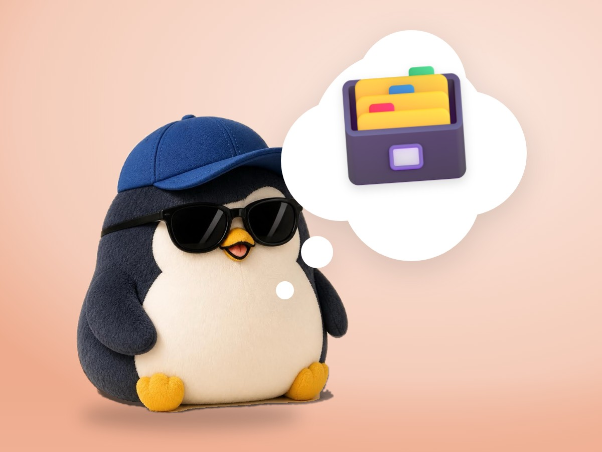

📝 DRAFT · 下書き — まだ本番に出していません · 下書き一覧
🐧 EVERYDAY LIFE⚡ 22 SEC
Sort your worries into 4 boxes, and you feel you can manage 📦

Write It Down
When you feel stuck, it seems good to write all your worries on paper.
70 Worries
There is a famous story that Carnegie wrote down about 70 worries.
4 Boxes
He sorted them into 4 boxes: "do tomorrow," "do next week," "do next month," and "can't solve → trash."
⚡ TRY IT
Sort the worries!
Tap a box for each worry. Any box is OK.
📱 I have not replied to a message.
🧺 The laundry is piling up.
🚲 My bike tire is flat.
✂️ I need a haircut.
📖 I want to study English again.
✈️ I want to plan a trip.
☔ It may rain on Sunday.
💭 What do people think of me?
Worry1/8
🐧 Hmm… I can manage somehow!
🍙 …And now I am hungry.
Hungry Ending
Then he thought, "I can manage somehow," and he got hungry.
Lighter Now
Worries are lighter in a box than in your head.
📚 I learned this from the Japanese blog "Panda no Ondo".